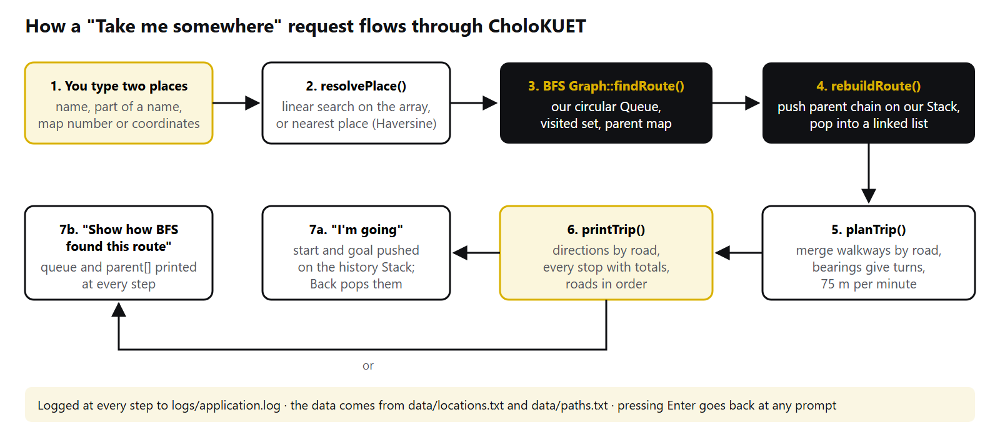
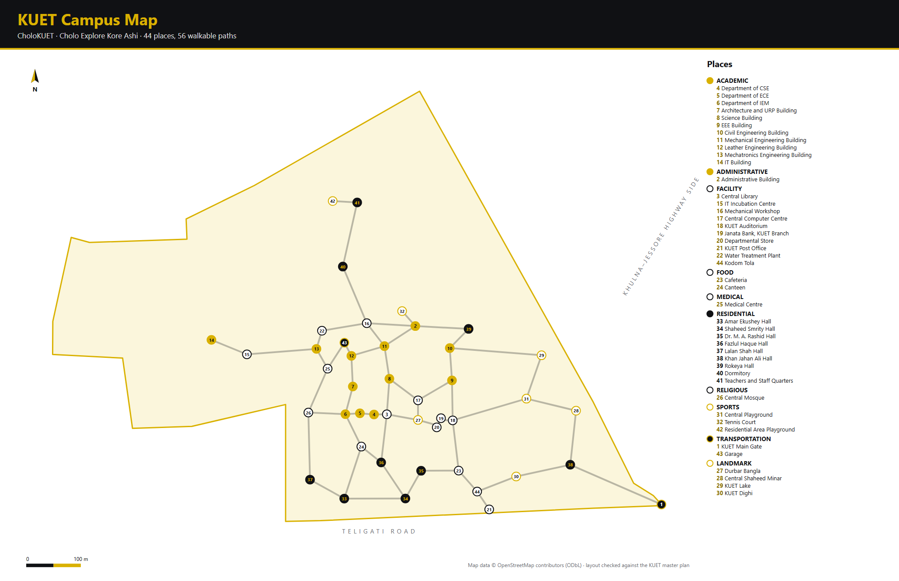

CholoKUET
A KUET campus navigator built on stacks, queues, trees and graphs


01Introduction
1.1 The problem
Every year a new batch arrives at KUET and spends its first few weeks lost. The campus covers about 117 acres and has more than forty buildings, many known only by short forms such as "ACA building", "ME building" or "Kodom Tola". Nothing on the ground tells you that CSE, ECE and IEM share one building, or that the quickest walk from the main gate to the library goes past the halls. Visitors have it even harder, and many students who have been here for years still could not say how far the medical centre is from Lalan Shah Hall.
We wanted to see how far a small program could go towards answering those everyday questions, using only the data structures we were studying in this course.
1.2 Motivation
Most lab work practises each data structure on its own: push three numbers, pop two, print the stack. That works, but it does not show why the stack exists. Campus navigation needs almost everything in the syllabus, naturally. Walkways between buildings form a graph. Finding a route is BFS. The Back button is a stack. Building categories form a tree. Finding a place by name is searching, and listing places by distance is sorting. Every structure in this project does a real job.
1.3 Objectives
- Build a working navigator for the KUET campus that runs offline on any Windows PC.
- Write the stack and the queue ourselves and use them where they matter: BFS, DFS, navigation history and route reversal.
- Use real campus coordinates that we can defend, not invented positions.
- Turn a route into directions a person can follow: which roads to take, where to turn, what you pass on the way, and how long it takes.
- Let the program show its own working (the BFS queue, the DFS stack), so each structure can be seen during the viva.
1.4 Scope
CholoKUET covers 44 places on the main campus (departments, halls, the library, the auditorium, the medical centre, landmarks such as Durbar Bangla and the Central Shaheed Minar) connected by 56 walkways on 15 named roads. It works at the level of buildings, not rooms, and it does not read live GPS: the user types a place or a pair of coordinates. The name CholoKUET comes from Cholo Explore Kore Ashi ("come on, let's go explore"), because the project began with a simple question: could we build our own map of our own campus?
02How the Marking Scheme Is Covered
This chapter maps each part of the tentative marks distribution to the exact feature and source file that covers it, so any part can be shown quickly during the evaluation.
The lab asked for the stack and queue to be written by hand; the other
containers may come from the STL. Every algorithm that runs on them (BFS,
DFS, linear and binary search, bubble and selection sort) is our own code.
Running make check-manual confirms that
std::stack, std::queue and std::sort
appear nowhere in the program.
| Marking area | Marks | Where it is covered in the app | Where it is in the code |
|---|---|---|---|
| Array | 5 (with LL, Stack, Queue) | The list of all 44 places, used by every search, sort and "nearest place" lookup | Campus::locations (std::vector<Location>) in include/Campus.h, src/Campus.cpp |
| Linked list | Recent searches (newest first, last 10), favorites, and every BFS route | std::list<int> in include/Navigator.h; Graph::findRoute() returns std::list<int> | |
| Stack (hand-written) | DFS, the Back button in Trip history, turning the BFS route the right way round, removing a deleted place from history | dsa/stack/Stack.h, Stack.cpp; used in src/Graph.cpp, src/Places.cpp, src/NavigatorAdmin.cpp | |
| Queue (hand-written, circular) | BFS for every route in "Take me somewhere" and "Take me here" | dsa/queue/Queue.h, Queue.cpp; used in Graph::findRoute() | |
| Tree | 5 | Browse by category (menu 5): KUET → category → place; rebuilt after every admin change | include/CampusTree.h, src/CampusTree.cpp: build, addChild, find, remove, print, countNodes, height |
| BFS | 3 (with DFS, Searching) | Take me somewhere (menu 1), "Take me here" on a place page, and the step-by-step "Show how BFS found this route" | Graph::findRoute() and Graph::rebuildRoute() in src/Graph.cpp |
| DFS | Explore the campus (menu 3), the connectivity check, the warning after an admin deletes a place or walkway | Graph::depthFirstOrder(), Graph::isConnected() in src/Graph.cpp | |
| Searching | Search (menu 4), and every "which place?" prompt; binary search for exact names | src/Search.cpp: linearSearchByName, linearSearchByCategory, linearSearchById, binarySearchByName | |
| Sorting | 2 | Sort places (menu 6); What's near me (menu 2); sorting a copy before binary search | src/Sort.cpp: bubbleSortByName, selectionSortByName, selectionSortByCategory, bubbleSortByDistance |
| Presentation | 5 | Slide deck with a live demo plan, logo, generated campus map | presentation/CholoKUET Presentation.pptx, assets/ |
| Q&A and Report | 5 | This report, 55 viva questions with answers, the DSA mapping, 907 unit checks | presentation/, docs/viva-questions.md, docs/dsa-mapping.md, tests/ |
03Where We Used What
3.1 Tools and technologies
| What | Used for |
|---|---|
| C++17 | The whole application |
| Standard library | vector (array), list (linked list), map and set (graph storage, visited sets), deque (last log lines), string, function |
| termcolor (third_party, BSD licence) | Coloured terminal output in KUET gold, wrapped in our own Style module |
| g++ 16 (MSYS2 UCRT64), GNU Make, CMake | Building the program and the tests; static linking so the .exe runs on any PC |
| windres | Putting the CholoKUET logo and version details into CholoKUET.exe |
| OpenStreetMap | Surveyed coordinates for 38 of the 44 places and the campus outline |
| KUET master plan | The road layout, and the position of six buildings OSM does not have |
| Node.js | tools/render-map.js, which draws the campus map from our data files |
| Git and GitHub | Version control; the code is at github.com/ettisafxrup/CholoKUET |
3.2 Every source file and what it holds
| File | What it does | Structures / algorithms inside |
|---|---|---|
main.cpp | Starts the app; can also build the whole program on its own | - |
dsa/stack/Stack.cpp | Our array stack | Stack |
dsa/queue/Queue.cpp | Our circular queue | Queue |
src/Graph.cpp | Walkway graph, BFS, route rebuild, DFS, connectivity | Graph, BFS + Queue, DFS + Stack, linked list |
src/Trip.cpp | Turns a BFS route into roads, turns, stops and time | Linear pass over the route list |
src/CampusTree.cpp | The category tree | General tree, preorder traversal |
src/Campus.cpp | Loads, checks and saves every data file | Array of places, graph |
src/Search.cpp | Linear and binary search | Searching |
src/Sort.cpp | Bubble and selection sort with counts | Sorting |
src/Distance.cpp | Haversine distance and compass bearing | - |
src/Navigator.cpp | Startup, login, main menu, "which place?" prompts | Linear search, history Stack, recent-search list |
src/Trips.cpp | Take me somewhere, What's near me, Explore | BFS, DFS, bubble sort |
src/Places.cpp | Search, place pages, categories, sorting, history, favorites | Search, sort, tree, stack, lists |
src/NavigatorAdmin.cpp | Adding, editing and deleting places and walkways | Array, graph, tree rebuild, stack rebuild |
src/Authentication.cpp, Logger.cpp, Style.cpp, Utils.cpp | Accounts, activity log, colours, safe input | - |
tests/*.cpp | Eight unit-test programs | Checks for every structure |
04How the Application Works
This chapter follows the program from the moment it starts until it closes, then walks through the main feature step by step.
4.1 Starting up
main()creates theNavigatorobject and callsinitialize().- The program looks for
data/locations.txtin the current folder and up to three folders above it, so it works whether it is started from the project folder, frombin/, or from a CMake build folder. - It turns on UTF-8 output and colours, creates
data/andlogs/if they are missing, and opens the activity log. Campusloads the categories, then the places into the array (each becomes a graph vertex), then the walkways into the graph. Broken or repeated lines are skipped and reported, never fatal.- The category tree is built from the loaded places.
Authenticationloads the accounts. If there are none, it creates admin / admin123 and student1 / student123.- A quick DFS checks that every place can be reached, and warns if not.
4.2 Logging in
The login screen offers Log in, Create an account and Exit. Passwords are
hidden with * while typing. Usernames are checked (3–30
letters, digits, _ or .), and passwords are stored
as a 64-bit FNV-1a hash of "username:password". After a successful login the
session starts fresh: an empty history stack, an empty recent-search list,
no current location, and the user's saved favorites list loaded from
data/favorites.txt.
4.3 The main menu
| # | Menu item | What happens | Structure used |
|---|---|---|---|
| 1 | Take me somewhere | Asks where you are and where you want to go, then gives directions | Graph, BFS + Queue, Stack, linked list |
| 2 | What's near me | The 10 closest places with distance, direction and walking time | Array, Haversine, bubble sort |
| 3 | Explore the campus | DFS order from a place, connectivity check, all roads | DFS + Stack |
| 4 | Search | One box for names, categories and numbers | Linear + binary search, linked list |
| 5 | Browse by category | KUET → category → place | Tree |
| 6 | Sort places | A–Z, Z–A, category, distance, with counts | Bubble + selection sort |
| 7 | Where am I? | Set your location by place or coordinates; copy it | Linear scan, Haversine |
| 8 | Trip history | Every place you have been; Back returns to the last | Stack |
| 9 | Recent searches | The last 10 places you searched for | Linked list |
| 10 | Favorites | Starred places, saved per user | Linked list |
| 11 | Help | How to use the app and how it works | - |
| 12–15 | Admin only | Manage places, manage walkways, users, activity log | Array, graph, tree |
Everywhere in the app, pressing Enter on its own goes back, and a place can
be typed as part of its name (lib), its number from the campus
map (3), or coordinates (22.8992, 89.5016).
4.4 "Take me somewhere", step by step

- Where are you? The answer goes to
resolvePlace(). Coordinates are matched to the closest place by computing the Haversine distance to all 44 places. A number is looked up by ID. Text is matched by linear search on names, then on categories. If several places match, the user picks one from a numbered list. Pressing Enter uses the current location. - Where do you want to go? The same process gives the destination.
- BFS (
Graph::findRoute) starts at the start place, puts it in our queue and marks it visited. It repeatedly dequeues a place and enqueues every unvisited neighbour, recordingparent[neighbour] = current. It stops when the destination is dequeued. - Rebuilding the route (
rebuildRoute): followingparentfrom the destination gives the route backwards. Each place is pushed on our stack, and popping them all gives the route in forward order, stored in a linked list. - Planning the trip (
planTrip): walking along the route once, walkways on the same road are merged into one step, and the places in between become "places you pass". Where the road changes, the compass bearings of the two walkways decide turn left, turn right or continue straight. Each step gets a direction, a length and a walking time at 75 m a minute. - Showing it (
printTrip): a summary line, directions by road, a table of every stop with leg and running distances, and the roads in order. - Afterwards the user can choose I'm going, which pushes the start and destination onto the history stack so Back can undo it, or Show how BFS found this route, which runs BFS again and prints the queue and
parentat every step.
4.5 The other features
- What's near me works out the distance from a point to every place in the array, sorts them with bubble sort, and shows the nearest ten with a compass direction and walking time.
- Explore the campus runs DFS from a chosen place (optionally showing the stack at every step), checks whether every place can be reached, and lists every road with its walkways.
- Search runs binary search on a sorted copy to find an exact name first, then linear search for partial name and category matches. Opening a result adds it to the recent-search list.
- Browse by category walks the tree: pick a category (a child of the root), then a place (a leaf).
- Trip history shows the stack from top to bottom. Back pops the top and moves you to the new top.
- Admin edits keep every structure consistent. Adding a place adds it to the array and the graph. Deleting one removes it from the array, the graph (with its walkways), the favorites and recent lists, and the history stack (by popping everything onto a second stack and pushing the rest back). Every change rebuilds the tree and is saved to the data files straight away.
4.6 Saving and closing
Every change is written to disk as it happens: places to
locations.txt, walkways to paths.txt, accounts to
users.txt, favorites to favorites.txt. Every login,
search, route, DFS and admin action is logged to
logs/application.log with a timestamp, and passwords are never
logged. On Log out the session state is cleared; on Exit the program says
goodbye and closes.
05System Design
5.1 Architecture
The program has three layers. The top layer is the menus
(Navigator, split across four files), which only talk to the
user. The middle layer is the campus model (Campus), which owns
the places, the categories and the graph, and is the only code that reads or
writes the data files. The bottom layer holds the data structures and
algorithms, which know nothing about menus or files. That is why the stack
can be opened and explained on its own, and why the same core could later
sit under a graphical app.
Terminal menus (Navigator)
| | |
Authentication Campus Logger, Style
|
+------------------+-------------------+
| | |
places (array) Graph (walkways) CampusTree
| |
BFS + our Queue DFS + our Stack
|
data/*.txt files
5.2 Data files
| File | One line looks like | Notes |
|---|---|---|
data/locations.txt | 3|Central Library|Facility|22.899247|89.501796|Central library of KUET | ID, name, category, latitude, longitude, description |
data/paths.txt | 4|3||Academic Walk | From, to, meters (empty = straight line), road name |
data/categories.txt | Academic | Order of categories in the tree |
data/users.txt | student1|445aff2fe080879e|student | Username, password hash, role |
data/favorites.txt | student1|3 | Username and place ID |
5.3 Where the map came from
We started from the Proposed Revised Master Plan of KUET Khulna Campus, but a drawing has no coordinates. OpenStreetMap had the campus outline and about forty named buildings, all surveyed on the ground, so we used those coordinates for 38 of our places. For the six buildings OSM does not have yet (Fazlul Haque Hall, the Central Mosque, the Canteen, the Garage, the Dormitory and Kodom Tola), we measured 18 buildings that appear in both the plan and OSM and fitted a least-squares affine transform from plan pixels to latitude and longitude. The fit differs from OSM by 27 m on average, about the width of one building, which also shows the plan's layout is accurate. The 56 walkways follow the roads on the plan. KUET Road and Khanjahan Ali Hall Road are OSM names; the other road names are our own descriptive labels.

06Data Structures
6.1 Array: the place list
All 44 places live in a std::vector<Location>. Reading by
index is O(1), which suits a list that is read constantly and changed only
by an admin. We never assume a place's ID equals its index: after a delete
everything shifts left, so every lookup goes by ID.
6.2 Linked list: searches, favorites and routes
Recent searches are a std::list<int>. A new search goes
to the front; if the place is already there it is moved rather than
duplicated; after ten, the oldest drops off the back. All of these are cheap
on a linked list. The route that BFS returns is also a list, because its
length is not known until the search ends and we only ever walk it front to
back.
6.3 Stack (hand-written)
An array of 200 integers and one index, top. An empty stack has
top = -1. push moves top up and
writes; pop reads and moves it down. Both refuse instead of
writing outside the array (overflow and underflow).
bool Stack::push(int value)
{
if (isFull())
return false; // overflow
data[++top] = value;
return true;
}
Used for DFS, the Back button, reversing the BFS route, and removing a deleted place from the middle of the history.
6.4 Queue (hand-written, circular)
A plain array queue wastes every slot it has dequeued. Ours wraps round with
% CAPACITY, so the rear moves back to slot 0 once the front has
moved on. A separate count tells a full queue from an empty
one.
bool Queue::enqueue(int value)
{
if (isFull())
return false; // overflow
rear = (rear + 1) % CAPACITY;
data[rear] = value;
count++;
return true;
}
Used for BFS in every route.
6.5 Tree: browsing by category
KUET is the root, each category is a child, and each place is a leaf. Each node keeps its children in a vector, so a category can hold any number of places (Academic has eleven, Medical has one); a binary tree would force artificial splits. Children are stored inside their parent, so removing a node removes its whole subtree. The campus tree has 55 nodes and a height of 3.
struct TreeNode
{
std::string name;
int locationId = -1; // -1 for the root and category nodes
std::vector<TreeNode> children;
};
6.6 Graph: walkways
Every place is a vertex and every walkway an undirected edge with a length in meters and a road name. We use an adjacency list, because the campus is sparse: 44 vertices and only 56 edges. A matrix would be mostly empty, and scanning a row would cost O(V) even for a place with two neighbours.
struct Edge
{
int to;
int meters;
std::string road;
};
std::map<int, std::vector<Edge>> adjacency; // place ID -> its walkways
07Algorithms
7.1 Breadth-first search
BFS explores outwards one ring of neighbours at a time using our queue. A neighbour is marked visited when it is enqueued, not when it is dequeued, which stops the same place from being queued twice. In an unweighted graph BFS gives the route with the fewest stops. Our walkways have different lengths, so that is not always the shortest walk in meters, and the app shows both the walking length and the straight-line distance.
while (!queue.isEmpty())
{
int current;
queue.dequeue(current);
if (current == goal)
break;
for (const Edge& edge : neighbors(current))
{
if (visited.count(edge.to))
continue;
visited.insert(edge.to);
parent[edge.to] = current;
queue.enqueue(edge.to);
}
}
7.2 Rebuilding the route
The parent map describes the route backwards. We follow it from
the destination and push each place on our stack; popping gives the forward
order. For the gate-to-library route, the library is pushed first and the
gate last, so the gate ends up on top (see Appendix A.6).
7.3 From a route to directions
planTrip() walks the route once, so it costs O(k) for a route of k stops:
- Consecutive walkways on the same road merge into one step; the places in between become "places you pass".
- Where the road changes, the bearing of the new walkway is compared with the old one: under 35° is continue straight, over 150° is turn around, anything else is turn left or turn right.
- Each step gets an overall compass direction, a length, and a walking time at 75 m a minute (about 4.5 km/h).
7.4 Depth-first search
Our DFS is iterative. The top of our stack is the place being explored, and for each place we remember how far we have scanned through its neighbours, so after backtracking we carry on from where we stopped. Each place is pushed only once, so the stack never holds more than the number of places and the fixed 200-slot stack cannot overflow, even on a fully connected graph; one of our tests checks exactly that.
7.5 Linear and binary search
Linear search lowercases both strings and checks whether one contains the
other, so lib finds Central Library. Binary search only
works on sorted data, so it runs on a copy sorted by name and answers "is
there an exact match?". On our 44 places it finds the library in 6
comparisons, where a linear scan checks all 44.
while (low <= high)
{
int mid = low + (high - low) / 2;
int result = compareIgnoreCase(name, sorted[mid].name);
comparisons++;
if (result == 0) return mid;
if (result < 0) high = mid - 1;
else low = mid + 1;
}
7.6 Bubble sort and selection sort
Bubble sort swaps neighbours that are out of order and stops early when a pass makes no swaps. Selection sort finds the smallest remaining item on each pass and swaps it into place. Sorting all 44 places by name, bubble sort made 880 comparisons and 367 swaps; selection sort made 946 comparisons (exactly 44 × 43 / 2) but only 39 swaps. Bubble sort is stable and selection sort is not. "What's near me" sorts 44 distances with bubble sort (931 comparisons, 474 swaps from the main gate).
7.7 Distance and direction
Distances use the Haversine formula with an Earth radius of 6,371 km, accurate to well under a meter over campus distances. Directions use the initial compass bearing between two points (0° north, 90° east), named as one of eight compass points.
a = sin²(Δφ/2) + cos φ1 · cos φ2 · sin²(Δλ/2) d = 2R · atan2(√a, √(1 − a)) bearing = atan2(sin Δλ · cos φ2, cos φ1 · sin φ2 − sin φ1 · cos φ2 · cos Δλ)
08Complexity Analysis
| Operation | Time | Note |
|---|---|---|
| Array access by index | O(1) | |
| Find a place by ID | O(n) | Linear scan |
| Delete a place | O(n) | Later items shift left |
| Linked list: insert at front, remove from back | O(1) | Recent searches |
| Stack push / pop / peek | O(1) | |
| Queue enqueue / dequeue | O(1) | Circular indexes |
| Tree traversal and search | O(n) | n = number of nodes |
| BFS, DFS | O(V + E) | Adjacency list; a matrix would make it O(V²) |
| Turning a route into directions | O(k) | k = stops on the route |
| Linear search | O(n) | |
| Binary search | O(log n) | Sorted data only |
| Bubble sort | O(n²) | O(n) when already sorted |
| Selection sort | O(n²) | At most n − 1 swaps |
| What's near me | O(n²) | n distances, then bubble sort |
Memory is O(V + E) for the graph and O(n) for everything else. The stack and queue are fixed at 200 integers each, and the program never lets the campus grow past 200 places, so neither can overflow during BFS or DFS.
09Testing
We wrote eight small test programs, one per module, with a tiny
CHECK macro of our own. make test builds and runs
them all, and any failure stops the run.
| Suite | What it checks | Checks |
|---|---|---|
| Stack | Empty stack, LIFO order, peek, overflow at 200, underflow | 213 |
| Queue | Empty queue, FIFO order, overflow, wraparound past the end of the array | 419 |
| Graph, BFS, DFS | Reachable, same start and end, unreachable, fewest stops over a longer path, disconnected and connected DFS, deleting a place, a full 200-vertex graph | 26 |
| Tree | Building from data, empty categories, case-insensitive find, removing a subtree | 15 |
| Search | Found, not found, partial and case-insensitive matches, binary search on sorted data | 22 |
| Sort | Empty, one item, already sorted, reverse sorted, duplicates (stability), by category and distance | 13 |
| Trip | Legs merge along one road, left and right turns, compass names, walking time, the trip reversed | 34 |
| Campus data | The real data files load with no bad lines, every walkway has a road name, all places are connected and on campus | 165 |
| Total | 907 |
We also drove the whole program with scripted input as both a student and an admin, through every menu: wrong passwords, letters where numbers were expected, out-of-range choices, mismatched passwords, and adding, editing and deleting places and walkways. The program never crashed, the log recorded every action, and no password appeared in it.
Problems we found and fixed
- DFS could overflow the stack. The textbook "pop, then push every unvisited neighbour" version can push the same place many times, which on a dense graph needs more than 200 slots. We switched to the version that pushes each place once. A test on a complete 200-vertex graph guards against the old behaviour.
- The program crashed at startup on one PC. It was loading an incompatible
libstdc++DLL from another program on the PATH. Linking statically fixed it and made the.exeportable. - termcolor did not compile with g++ 16, because it uses
uint8_twithout including<cstdint>. We include it before the library instead of editing the library.
10Screens from the App
These screens are copied from the program's own output. In the terminal, titles and menu numbers appear in KUET gold and hints in grey.
Main menu
╔═══════════════════════════════════════╗
║ CholoKUET ║
╚═══════════════════════════════════════╝
Cholo Explore Kore Ashi · KUET campus
Hi, student1 · you're at Central Library
GET AROUND
1 Take me somewhere from where you are to where you want to go
2 What's near me closest places, nearest first
3 Explore the campus walk the whole campus with DFS
FIND
4 Search by name, category or ID
5 Browse by category the campus as a tree
6 Sort places A-Z, Z-A, category, distance
YOU
7 Where am I? set or share your location
8 Trip history go back to where you were
9 Recent searches
10 Favorites 3 saved
11 Help
0 Log out
Take me somewhere: Central Library to the main gate
Central Library → KUET Main Gate 707 m walk · about 10 min · 9 places · 3 roads DIRECTIONS ● Start at Central Library 1 Head south on Library Lane · 89 m, about 2 min │ until you reach Fazlul Haque Hall 2 Turn left, heading east on Hall Road · 258 m, about 4 min │ past Shaheed Smrity Hall, Dr. M. A. Rashid Hall and Cafeteria │ until you reach Kodom Tola 3 Turn left, heading east on KUET Road · 360 m, about 5 min │ past KUET Dighi and Khan Jahan Ali Hall ● Arrive at KUET Main Gate STOPS # Place Road Leg Total 1 Central Library - - 0 m 2 Fazlul Haque Hall Library Lane 89 m 89 m 3 Shaheed Smrity Hall Hall Road 80 m 169 m 4 Dr. M. A. Rashid Hall Hall Road 58 m 227 m 5 Cafeteria Hall Road 69 m 296 m 6 Kodom Tola Hall Road 51 m 347 m 7 KUET Dighi KUET Road 77 m 424 m 8 Khan Jahan Ali Hall KUET Road 101 m 525 m 9 KUET Main Gate KUET Road 182 m 707 m ROADS Library Lane → Hall Road → KUET Road
What's near me, from the main gate
1 KUET Main Gate 0 m you're here 2 Khan Jahan Ali Hall 182 m north-west about 3 min 3 Central Shaheed Minar 232 m north-west about 4 min 4 KUET Dighi 271 m west about 4 min 5 Central Playground 314 m north-west about 5 min Sorted with bubble sort: 931 comparisons, 474 swaps.
11Limitations
- Fewest stops, not fewest meters. BFS ignores walkway length, so the suggested route can be a little longer in meters than the best one.
- Six positions are estimates. Fazlul Haque Hall, the Central Mosque, the Canteen, the Garage, the Dormitory and Kodom Tola come from the master plan and are accurate to about 30 m.
- Most road names are ours. Only KUET Road and Khanjahan Ali Hall Road are official names from OSM.
- Buildings only. There are no floors, rooms or labs yet.
- Walkways are simplified. They follow the plan's roads; short cuts and newer paths are missing.
- No live location. The user types a place or coordinates instead of reading GPS.
- Demo-level login. FNV-1a is fast to brute-force; a real system would use bcrypt or Argon2.
- Terminal only. The map picture is generated separately, not shown inside the program.
12How We Can Improve It
The current design makes each of these a contained change, because the data structures do not depend on the menus.
12.1 Better routes
- Dijkstra's algorithm for the shortest walk in meters. Every walkway already stores its length, so only a priority queue and a new
shortestRoute()are needed. The app could show both routes side by side. - A* search using the straight-line (Haversine) distance as the heuristic, to find the same shortest route while exploring fewer places.
- Accessible routes by giving walkways extra properties (stairs, ramp, unpaved) and skipping the ones a user wants to avoid.
- Time-aware routes, for example avoiding gates that close at night.
12.2 Better data
- Survey the six estimated buildings with a phone GPS and add them to OpenStreetMap, so the map improves for everyone.
- Add the real names of internal roads once confirmed by the university.
- Go one level deeper in the tree: floors, rooms and labs inside each building ("CSE Lab 3").
- Store data in SQLite instead of text files once many admins edit it at once.
12.3 Better experience
- A graphical, clickable map (Qt, SFML or a web front end) on top of the same C++ core.
- A phone app that reads live GPS and snaps it to the nearest building.
- A Bangla interface, and spoken turn-by-turn directions.
- Search that tolerates typos ("libary" → Library) using edit distance.
12.4 Better engineering
- Replace the demo password hash with bcrypt or Argon2.
- Automatic builds and tests on every push with GitHub Actions.
- A packaged Windows installer with a Start-menu shortcut.
·References
- T. H. Cormen, C. E. Leiserson, R. L. Rivest, C. Stein, Introduction to Algorithms, 3rd ed., MIT Press, 2009. Chapters on elementary data structures, BFS, DFS and sorting.
- OpenStreetMap contributors, KUET campus data, © OpenStreetMap contributors, Open Database Licence (ODbL).
- Proposed Revised Master Plan of KUET Khulna Campus.
- R. W. Sinnott, "Virtues of the Haversine", Sky and Telescope, 68(2), 1984.
- I. Kalnytskyi, termcolor: a header-only C++ library for printing coloured messages, BSD 3-Clause licence.
AAppendix A. Data Structure Walkthroughs
These walkthroughs were recorded from the program, running our own Stack, Queue, Tree, BFS, search and sort code on the real campus data. They show each structure's state after every operation.
A.1 Array
Insert four places at the end: [0] CSE [1] Library [2] EEE [3] Main Gate Size = 4 Access array[1] directly: Library Remove index 0 (everything after it shifts left): [0] Library [1] EEE [2] Main Gate The real location list is an array too: 44 of 200 slots used. Complexity: access O(1), append O(1), delete/search O(n)
A.2 Linked list
insertBack(CSE), insertBack(Library), insertBack(EEE) HEAD → CSE → Library → EEE → NULL insertFront(Main Gate) HEAD → Main Gate → CSE → Library → EEE → NULL remove(Library) HEAD → Main Gate → CSE → EEE → NULL contains(EEE)? yes A real BFS route is stored the same way: HEAD → KUET Main Gate → Khan Jahan Ali Hall → Central Shaheed Minar → Central Playground → KUET Auditorium → Janata Bank, KUET Branch → Departmental Store → Durbar Bangla → Central Library → NULL Complexity: insert at head/tail O(1), search/remove O(n)
A.3 Stack (hand-written, dsa/stack)
PUSH 10 PUSH 20 PUSH 30 TOP (top = 2) ↓ 30 20 10 POP → 30 TOP (top = 1) ↓ 20 10 PEEK → 20 (not removed) Popping an empty stack: underflow, refused With campus places, like the navigation history: TOP (top = 3) ↓ Central Library Mechanical Engineering Building Administrative Building KUET Main Gate Complexity: push O(1), pop O(1), peek O(1)
A.4 Queue (hand-written circular queue, dsa/queue)
ENQUEUE 10 ENQUEUE 20 ENQUEUE 30 FRONT → 10 20 30 ← REAR DEQUEUE → 10 FRONT → 20 30 ← REAR front index = 1, rear index = 2 Wraparound: fill the queue, dequeue 2, enqueue 2 more. front index = 2, rear index = 1 → the rear wrapped back to the start of the array Enqueue on a full queue: overflow, refused With campus places, the way BFS uses it: FRONT → KUET Main Gate, Khan Jahan Ali Hall, KUET Auditorium ← REAR Complexity: enqueue O(1), dequeue O(1)
After filling all 200 slots and dequeuing two, the next two values go into slots 0 and 1: the rear wraps round to the start of the array while the front is still at slot 2.
A.5 Tree
A small general tree (any number of children per node): KUET ├── Academic │ ├── CSE │ └── EEE ├── Facilities │ ├── Library │ └── Auditorium └── Residential Preorder traversal (node first, then its children): 1. KUET 2. Academic 3. CSE 4. EEE 5. Facilities 6. Library 7. Auditorium 8. Residential Parent of CSE is Academic; CSE and EEE are siblings. Nodes: 8, height: 3 The real campus tree has 55 nodes, 10 categories, height 3 (see menu 5). Complexity: traversal O(n), search O(n)
A.6 BFS from the main gate to the Central Library
Each step dequeues one place and enqueues its unvisited neighbours,
recording parent[]. Once the library is dequeued, the parent
chain is pushed onto our stack and popped off in forward order.
Start at KUET Main Gate
FRONT → KUET Main Gate ← REAR
Step 1: dequeue KUET Main Gate
enqueue Khan Jahan Ali Hall (parent: KUET Main Gate)
FRONT → Khan Jahan Ali Hall ← REAR
Step 2: dequeue Khan Jahan Ali Hall
enqueue Central Shaheed Minar (parent: Khan Jahan Ali Hall)
enqueue KUET Dighi (parent: Khan Jahan Ali Hall)
FRONT → Central Shaheed Minar, KUET Dighi ← REAR
Step 3: dequeue Central Shaheed Minar
enqueue Central Playground (parent: Central Shaheed Minar)
FRONT → KUET Dighi, Central Playground ← REAR
Step 4: dequeue KUET Dighi
enqueue Kodom Tola (parent: KUET Dighi)
FRONT → Central Playground, Kodom Tola ← REAR
Step 5: dequeue Central Playground
enqueue KUET Auditorium (parent: Central Playground)
enqueue KUET Lake (parent: Central Playground)
FRONT → Kodom Tola, KUET Auditorium, KUET Lake ← REAR
Step 6: dequeue Kodom Tola
enqueue KUET Post Office (parent: Kodom Tola)
enqueue Cafeteria (parent: Kodom Tola)
FRONT → KUET Auditorium, KUET Lake, KUET Post Office, Cafeteria ← REAR
Step 7: dequeue KUET Auditorium
enqueue Janata Bank, KUET Branch (parent: KUET Auditorium)
enqueue EEE Building (parent: KUET Auditorium)
FRONT → KUET Lake, KUET Post Office, Cafeteria, Janata Bank, KUET Branch, EEE Building ← REAR
Step 8: dequeue KUET Lake
enqueue Civil Engineering Building (parent: KUET Lake)
FRONT → KUET Post Office, Cafeteria, Janata Bank, KUET Branch, EEE Building, Civil Engineering Building ← REAR
Step 9: dequeue KUET Post Office
FRONT → Cafeteria, Janata Bank, KUET Branch, EEE Building, Civil Engineering Building ← REAR
Step 10: dequeue Cafeteria
enqueue Dr. M. A. Rashid Hall (parent: Cafeteria)
FRONT → Janata Bank, KUET Branch, EEE Building, Civil Engineering Building, Dr. M. A. Rashid Hall ← REAR
Step 11: dequeue Janata Bank, KUET Branch
enqueue Departmental Store (parent: Janata Bank, KUET Branch)
FRONT → EEE Building, Civil Engineering Building, Dr. M. A. Rashid Hall, Departmental Store ← REAR
Step 12: dequeue EEE Building
enqueue Central Computer Centre (parent: EEE Building)
FRONT → Civil Engineering Building, Dr. M. A. Rashid Hall, Departmental Store, Central Computer Centre ← REAR
Step 13: dequeue Civil Engineering Building
enqueue Rokeya Hall (parent: Civil Engineering Building)
FRONT → Dr. M. A. Rashid Hall, Departmental Store, Central Computer Centre, Rokeya Hall ← REAR
Step 14: dequeue Dr. M. A. Rashid Hall
enqueue Shaheed Smrity Hall (parent: Dr. M. A. Rashid Hall)
FRONT → Departmental Store, Central Computer Centre, Rokeya Hall, Shaheed Smrity Hall ← REAR
Step 15: dequeue Departmental Store
enqueue Durbar Bangla (parent: Departmental Store)
FRONT → Central Computer Centre, Rokeya Hall, Shaheed Smrity Hall, Durbar Bangla ← REAR
Step 16: dequeue Central Computer Centre
enqueue Science Building (parent: Central Computer Centre)
FRONT → Rokeya Hall, Shaheed Smrity Hall, Durbar Bangla, Science Building ← REAR
Step 17: dequeue Rokeya Hall
enqueue Administrative Building (parent: Rokeya Hall)
FRONT → Shaheed Smrity Hall, Durbar Bangla, Science Building, Administrative Building ← REAR
Step 18: dequeue Shaheed Smrity Hall
enqueue Fazlul Haque Hall (parent: Shaheed Smrity Hall)
enqueue Amar Ekushey Hall (parent: Shaheed Smrity Hall)
FRONT → Durbar Bangla, Science Building, Administrative Building, Fazlul Haque Hall, Amar Ekushey Hall ← REAR
Step 19: dequeue Durbar Bangla
enqueue Central Library (parent: Durbar Bangla)
FRONT → Science Building, Administrative Building, Fazlul Haque Hall, Amar Ekushey Hall, Central Library ← REAR
Step 20: dequeue Science Building
enqueue Mechanical Engineering Building (parent: Science Building)
FRONT → Administrative Building, Fazlul Haque Hall, Amar Ekushey Hall, Central Library, Mechanical Engineering Building ← REAR
Step 21: dequeue Administrative Building
enqueue Mechanical Workshop (parent: Administrative Building)
enqueue Tennis Court (parent: Administrative Building)
FRONT → Fazlul Haque Hall, Amar Ekushey Hall, Central Library, Mechanical Engineering Building, Mechanical Workshop, Tennis Court ← REAR
Step 22: dequeue Fazlul Haque Hall
enqueue Canteen (parent: Fazlul Haque Hall)
FRONT → Amar Ekushey Hall, Central Library, Mechanical Engineering Building, Mechanical Workshop, Tennis Court, Canteen ← REAR
Step 23: dequeue Amar Ekushey Hall
enqueue Lalan Shah Hall (parent: Amar Ekushey Hall)
FRONT → Central Library, Mechanical Engineering Building, Mechanical Workshop, Tennis Court, Canteen, Lalan Shah Hall ← REAR
Step 24: dequeue Central Library
Walking back through parent[] from Central Library to KUET Main Gate and pushing each stop:
TOP (top = 8)
↓
KUET Main Gate
Khan Jahan Ali Hall
Central Shaheed Minar
Central Playground
KUET Auditorium
Janata Bank, KUET Branch
Departmental Store
Durbar Bangla
Central Library
Popping the stack gives the route from the start.
Route: KUET Main Gate → Khan Jahan Ali Hall → Central Shaheed Minar → Central Playground → KUET Auditorium → Janata Bank, KUET Branch → Departmental Store → Durbar Bangla → Central Library
Complexity: O(V + E); gives the fewest stops in an unweighted graph
A.7 Linear and binary search
Linear search for "Central Library" in the unsorted list: Result: Central Library (checked all 44 items) Linear search for ID 30 stopped after 30 comparisons (found) Binary search needs sorted data, so sort a copy by name first. low=0 mid=21 high=43 "IT Building" → go left low=0 mid=10 high=20 "Civil Engineering Building" → go left low=0 mid=4 high=9 "Canteen" → go right low=5 mid=7 high=9 "Central Mosque" → go left low=5 mid=5 high=6 "Central Computer Centre" → go right low=6 mid=6 high=6 "Central Library" → found Result: Central Library (6 comparisons) Complexity: linear O(n), binary O(log n) but only on sorted data
A.8 Bubble sort and selection sort, pass by pass
Before: KUET Main Gate; Department of ECE; EEE Building; Mechatronics Engineering Building; Central Computer Centre; KUET Post Office Bubble sort A-Z: Pass 1: [Department of ECE, EEE Building, KUET Main Gate, Central Computer Centre, KUET Post Office, Mechatronics Engineering Building] Pass 2: [Department of ECE, EEE Building, Central Computer Centre, KUET Main Gate, KUET Post Office, Mechatronics Engineering Building] Pass 3: [Department of ECE, Central Computer Centre, EEE Building, KUET Main Gate, KUET Post Office, Mechatronics Engineering Building] Pass 4: [Central Computer Centre, Department of ECE, EEE Building, KUET Main Gate, KUET Post Office, Mechatronics Engineering Building] Pass 5: [Central Computer Centre, Department of ECE, EEE Building, KUET Main Gate, KUET Post Office, Mechatronics Engineering Building] Comparisons: 15, swaps: 7 Selection sort A-Z: Pass 1: [Central Computer Centre, Department of ECE, EEE Building, Mechatronics Engineering Building, KUET Main Gate, KUET Post Office] Pass 2: [Central Computer Centre, Department of ECE, EEE Building, Mechatronics Engineering Building, KUET Main Gate, KUET Post Office] Pass 3: [Central Computer Centre, Department of ECE, EEE Building, Mechatronics Engineering Building, KUET Main Gate, KUET Post Office] Pass 4: [Central Computer Centre, Department of ECE, EEE Building, KUET Main Gate, Mechatronics Engineering Building, KUET Post Office] Pass 5: [Central Computer Centre, Department of ECE, EEE Building, KUET Main Gate, KUET Post Office, Mechatronics Engineering Building] Comparisons: 15, swaps: 3 Bubble swaps neighbours many times; selection makes at most n-1 swaps. Bubble sort is stable, selection sort is not. Complexity: both O(n^2); bubble sort is O(n) when already sorted
BAppendix B. Building and Running
- Install g++ through MSYS2 (
pacman -S mingw-w64-ucrt-x86_64-gcc) and addC:\msys64\ucrt64\binto PATH. - Open a terminal in the project folder and run
make run. It buildsbin/CholoKUET.exewith the logo icon and starts it.make testbuilds and runs all eight test programs. - Without make,
g++ -std=c++17 main.cpp -o CholoKUETbuilds the whole program in one command, becausemain.cpppulls in every other source file. - Log in as student1 / student123, or as admin / admin123 for the admin menus.